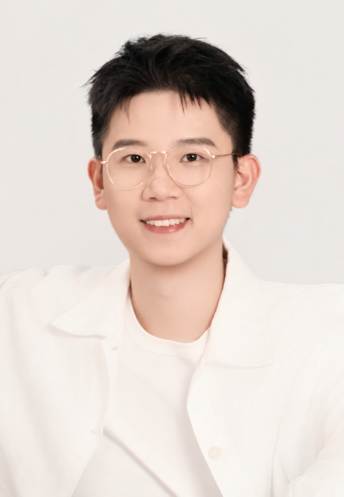
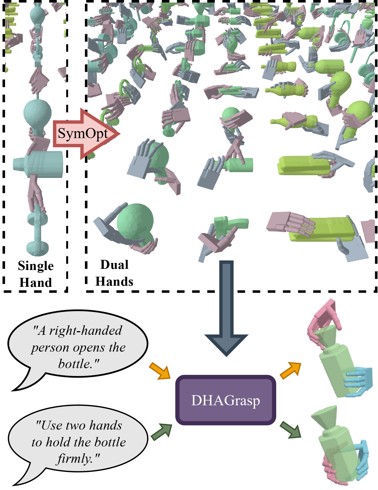
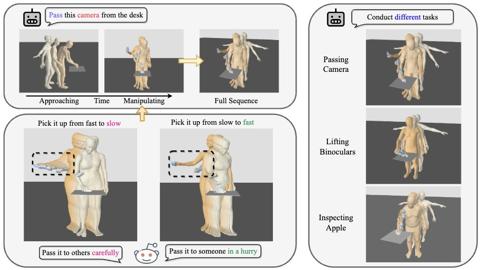
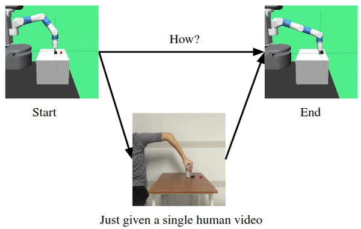

World Models as Native Latent Action Models
arXiv, 2026
We extract compact latent actions from a pretrained video world model and use them to pretrain PAWlicy, a vision-language-action policy, on human, robot, and simulated videos.

I'm a PhD student at Nanyang Technological University, supervised by Prof. Chen Change Loy and Prof. Bo Dai. I earned my Bachelor's degree from the University of Toronto with High Distinction in 2020. I also spent two years at Beihang University, China, before transferring to U of T in 2018.
I’m broadly interested in embodied AI. I’m working toward building agents that can use their bodies, virtual or physical, to interact with the world around them.
arXiv, 2026
We extract compact latent actions from a pretrained video world model and use them to pretrain PAWlicy, a vision-language-action policy, on human, robot, and simulated videos.

Technical report, 2026
We evaluate GPT-6-Astra across 12 embodied benchmarks and eight real-robot platforms, examining how in-context learning, execution budgets, and the control harness affect performance.

arXiv, 2025
We propose SymOpt for large-scale dual-hand grasp data generation and DHAGrasp, a text-guided two-stage model that synthesizes diverse dual-hand affordance-aware grasps for unseen objects.

WACV 2024
We propose a method that generates full human-object interaction motions to conduct specific tasks. Our generated motions are continuous and allow upsampling to arbitrary frames.

IROS 2021
We develop a perception module that learns to translate human videos to the robot domain followed by keypoint detection learned in an unsupervised fashion. The key insight of our method lies in explicitly exploiting the kinematics and motion information embedded in the video to learn structured representations.
Conference reviewer